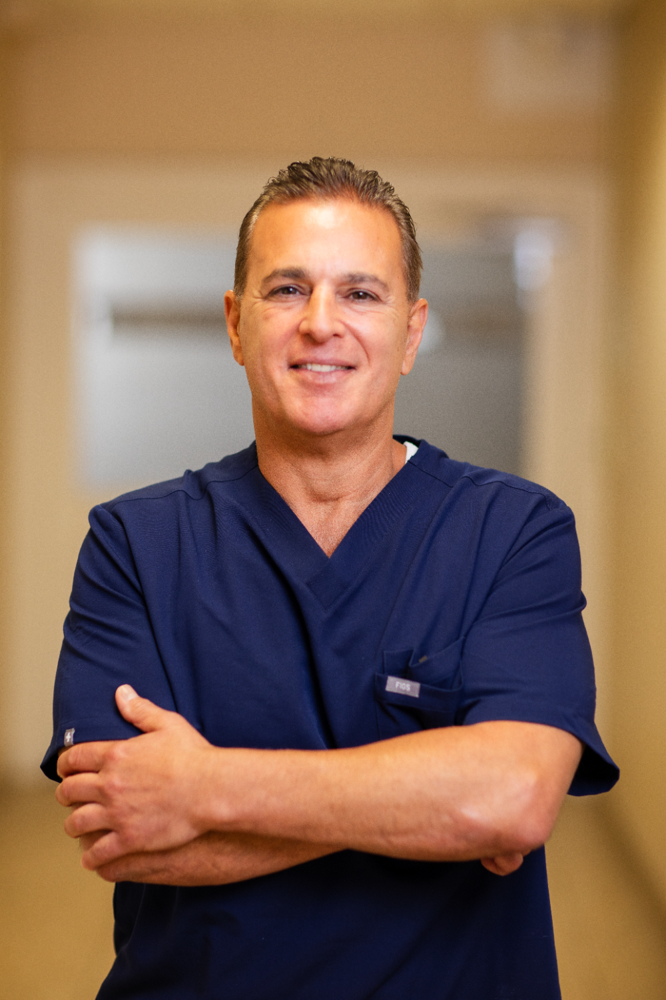
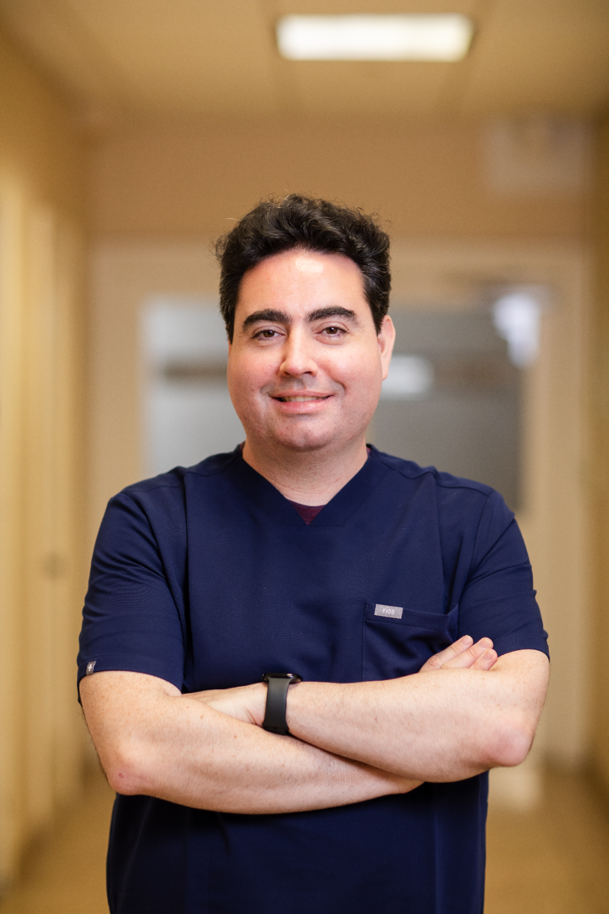

Meet Our Brooklyn Heights Dentists
Bringing together three diverse educational backgrounds, advanced surgical residencies, and a shared passion for localized patient care. Our doctors combine their talents to deliver the safest, highest-quality clinical work possible.


Dr. Matthew Bellafiore, DDS
Dr. Matthew Bellafiore was born and raised right here in Brooklyn, developing a lifelong dedication to the health of his community. He earned his Doctorate of Dental Surgery (DDS) from the prestigious NYU Dental School before completing his General Practice Residency (GPR) at the Lutheran Medical Center (now known as NYU Langone). For over 30 years, Dr. Bellafiore has owned and guided our private practice, providing a foundation of absolute stability and clinical depth.
Dr. Bellafiore has committed his career to advanced continuing education, maintaining active membership with the world-renowned Pankey Institute for Advanced Dental Studies, the Dawson Academy, and holding credentials with the International Congress of Oral Implantologists (ICOI). He possesses elite clinical confidence in surgical dental implant placement and restoration, alongside complex, full-mouth functional reconstructions. On Saturday mornings, you will find Dr. Bellafiore golfing, biking, swimming, or cooking homemade pizzas in his outdoor pizza oven for his four beloved children.

Dr. Alexander Black, DDS
Dr. Alexander Black brings a highly unique, analytical perspective to modern dentistry. He initially earned his Bachelor of Science in Computer Science before completing Prehealth Postbacc Sciences at Columbia University to follow in his grandfather's footsteps. Dr. Black went on to receive his DDS from the Touro College of Dental Medicine, where he was honored with the prestigious Marc A. Rosenblum Award for Excellence in Operative Dentistry. He then sharpened his advanced skills through an AEGD residency with NYU Langone in Sunset Park, Brooklyn.
Having practiced extensively in smaller, relationship-driven offices like Williamsburg Dental Works and Scarsdale Dental Group, Dr. Black specializes in clear aligner therapy, aesthetic restorations, and therapeutic Masseter Botox for TMD and jaw clenching. He is an active member of the Pankey Institute and the ADA 2nd District. Having lived in the city since he was five years old, Dr. Black fell in love with Brooklyn during his residency. On weekends, he enjoys long walks along the NYC waterfront, scouting out the best local pizza and croissants, and pet sitting for family members.
Dr. Becca Baer, DDS
Dr. Becca Baer completed her comprehensive dental studies at the respected Indiana University School of Dentistry. Following graduation, she was selected for a highly competitive position within Montefiore Health System’s renowned Centennial Clinic in the Bronx. During her rigorous, two-year General Practice Residency, Dr. Baer received unique, advanced institutional training in complex prosthodontic restorations and comprehensive smile makeovers, while heavily refining her gentle general dentistry approach. Her leadership and clinical acumen led to her appointment as Chief Resident during her second year at Centennial.
Dr. Baer works closely with Dr. Black to manage our clear aligner cases, restorative porcelain treatments, and specialized Masseter Botox procedures for jaw tension relief. Outside of the office, Dr. Baer is a dedicated fitness enthusiast who loves attending local gym classes. She cherishes spending quality time with her husband and young son, exploring neighborhood bakeries for specialty treats like Kouign-amann, and frequently heading out to cheer on the New York Mets at baseball games.
Patients Who Benefit from Our Clinical Synergy:
- Individuals needing complex, full-mouth reconstructions that benefit immensely from a peer-reviewed, multi-doctor surgical panel.
- Patients searching for highly qualified clear aligner and TMJ bite providers backed by prestigious Pankey Institute continuums.
- Neighbors looking for relationship-focused dentists who take the time to build genuine connections, treating you like a family member.

Put Our Collective Expertise to Work For Your Smile
Exceptional dental care is never one-size-fits-all. When you choose Creative Dentistry of Brooklyn Heights, you aren't just booking a standard checkup, you are choosing a team of dedicated professionals who study your unique oral anatomy together as a collaborative triage. Let Dr. Bellafiore, Dr. Black, and Dr. Baer partner with you to build a transparent, long-term care blueprint designed entirely around your physical comfort and structural health.